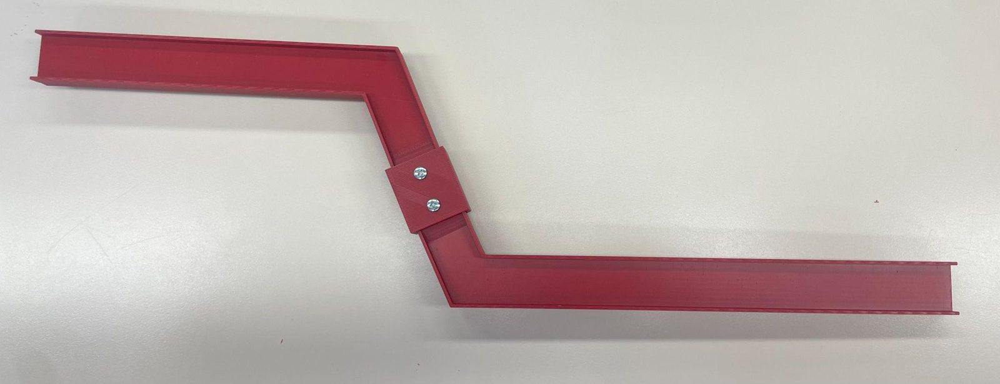
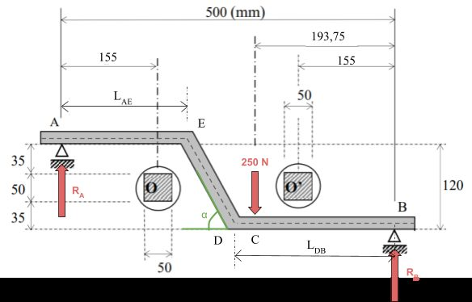
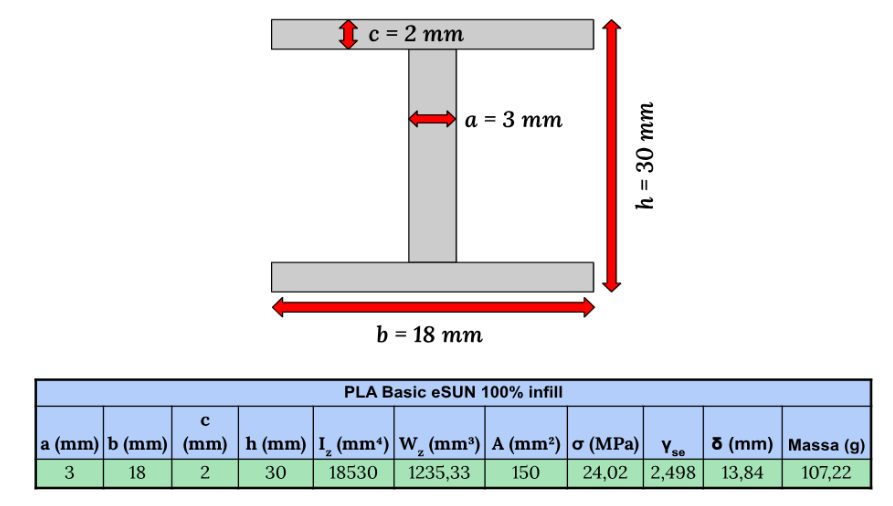
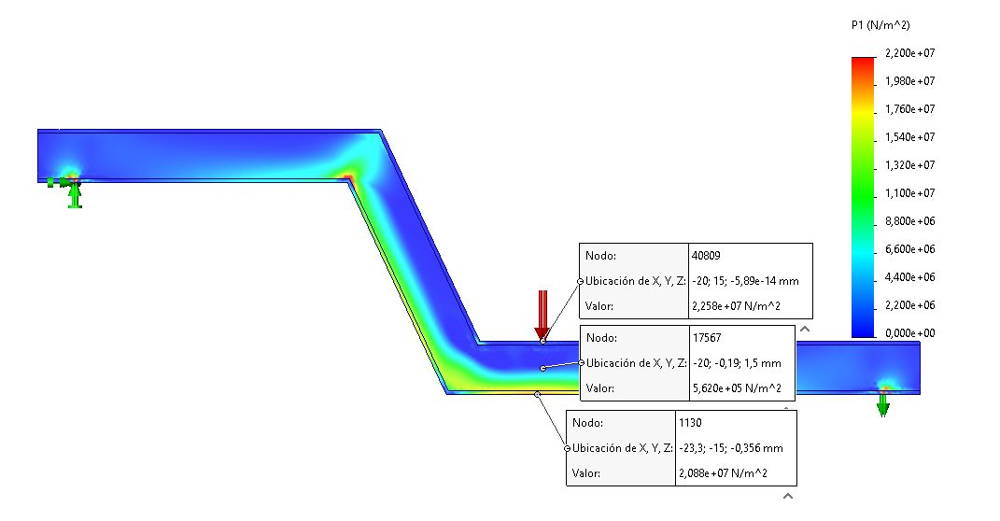
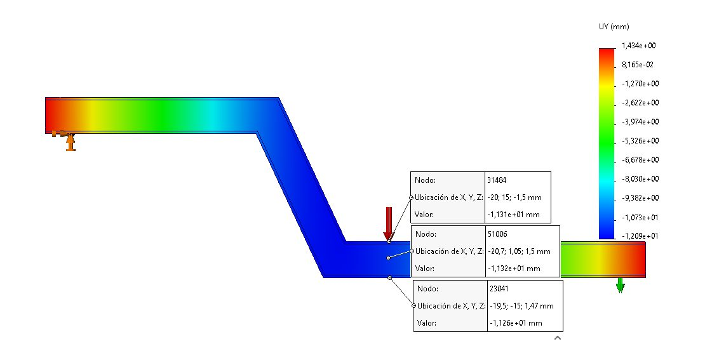
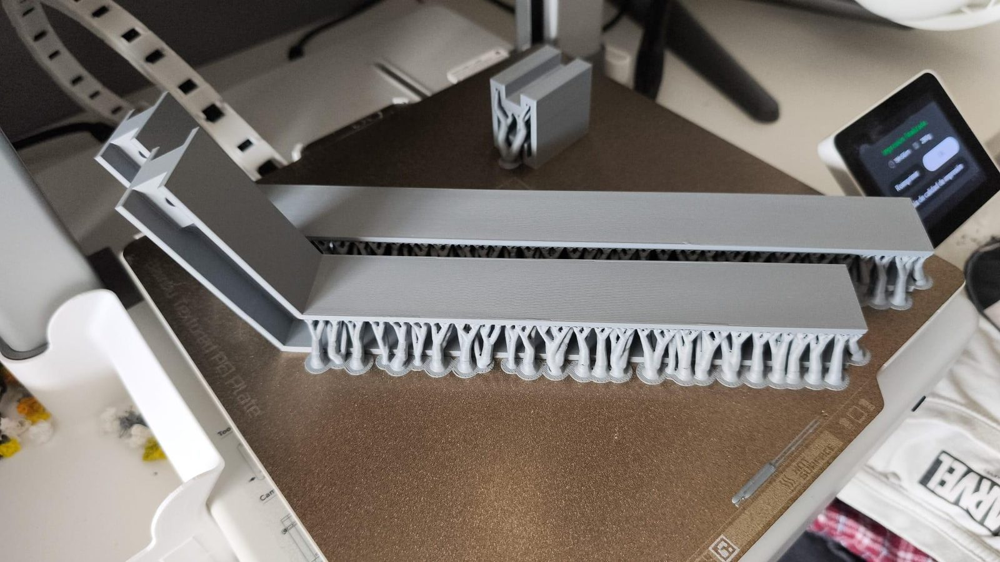
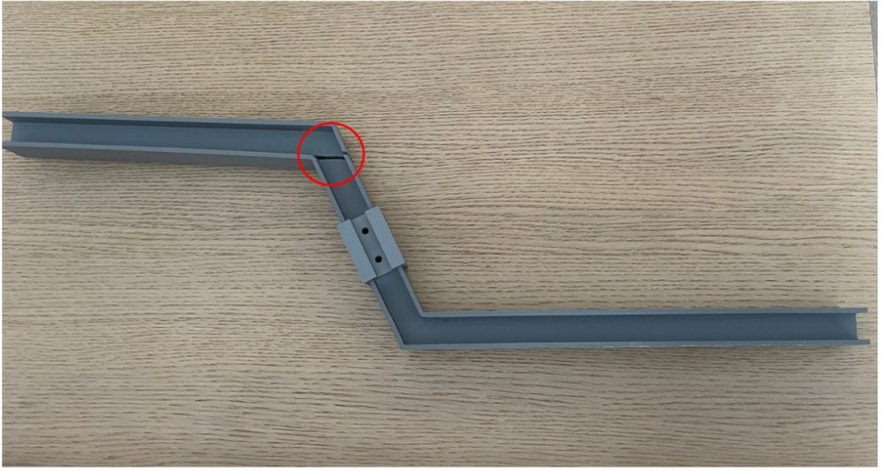
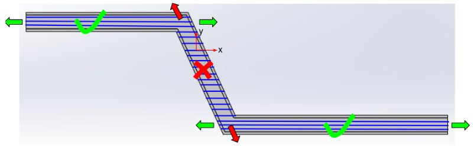
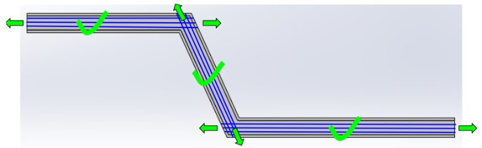

REF. 03 · Resistència de Materials · equip de 3
Biga de PLA impresa en 3D
Disseny, càlcul, fabricació i assaig d'un element resistent que salva dos obstacles i suporta 250 N entre suports separats 500 mm. La fletxa havia de ser com a màxim de 15 mm i el coeficient de seguretat d'entre 1,5 i 2,5. Ho vam resoldre amb una secció en doble T impresa en PLA.
- Període
- 02/2026 – 05/2026
- Tipus
- Resistència de Materials · equip de 3
- El meu paper
- Càlcul, disseny i impressió
- Estat
- Acabat

- 250 N
- càrrega de servei
- 13,8 mm
- fletxa calculada (límit 15 mm)
- 2,50
- coeficient de seguretat
- 107 g
- massa teòrica
Geometria
La forma de la biga venia condicionada per dos obstacles. Vam iterar l'angle del tram inclinat i la longitud del primer tram, i vam triar 65° i 185 mm. És un compromís entre moment flector baix, un repartiment raonable entre axial i tallant, i unions fàcils de fabricar.
Material i secció
Amb diagrames d'Ashby vam triar PLA (E = 2.800 MPa, límit de 60 MPa) imprès al 100 % de farciment: és barat, accessible i permet una geometria a mida. Vam triar una secció en doble T perquè és simètrica i aprofita igual les ales a tracció i a compressió. La vam dimensionar iterant amb la llei de Navier, el criteri de Rankine i el teorema de Castigliano, buscant la mínima massa que ho complís tot. El resultat va ser una secció de 18 × 30 mm amb parets de 2 i 3 mm.
Fabricació
La biga fa 500 mm i la placa de la impressora (Bambu Lab A1) només 256 mm, així que la vam imprimir en dues peces unides amb un empalmament a solapa i un cargol M4 d'acer. A la zona de la unió vam reforçar l'ànima fins a 10 mm, de manera que el coeficient de seguretat allà va passar a 3,5. Vam ajustar els paràmetres d'impressió (230 °C, capes de 0,16 mm, 5 perímetres, farciment rectilini al 100 %) perquè les propietats s'acostessin a les de la fitxa tècnica.
El primer prototip va fallar
La primera biga la vam imprimir en PLA Matte, que va resultar tenir un mòdul de Young força més baix que el fet servir als càlculs. La vam provar a casa i es va trencar molt abans del que esperàvem, separant-se entre capes al tram inclinat. Havíem imprès totes les capes en horitzontal, i al tram diagonal la tensió normal actuava en part perpendicular a elles. Vam tornar a imprimir en PLA Basic, orientant cada tram perquè les fibres seguissin la direcció de la tensió.
Verificació per elements finits
Vam contrastar el càlcul a mà amb SOLIDWORKS Simulation, amb una malla d'uns 58.000 nodes. La simulació va donar una fletxa d'11,3 mm, davant dels 13,8 mm de Castigliano. La diferència és raonable: el model 3D recull la rigidesa extra dels colzes i de la unió, que el càlcul analític no considera. Les dues xifres queden per sota del límit de 15 mm.
Imatges















